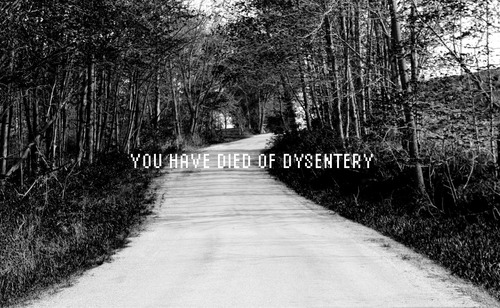

Ryan Alexander Dawson

Oregon Trail
Where Art Meets Design
Trained in sculpture and photography
it can be hard to find an aesthetic in
the realm of graphic design.
Not impossible.
Click here to view graphic design work
Welcome to my UX/UI design portfolio
As a new designer, I find great pleasure in trying new techniques and pushing my limits past my comfort zone.
Feel free to take a look around my site and get in contact with me if you like what you see. Thank you for stopping by.